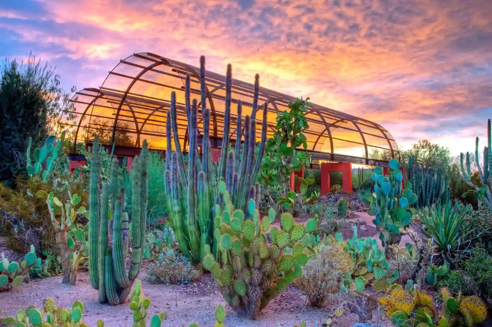
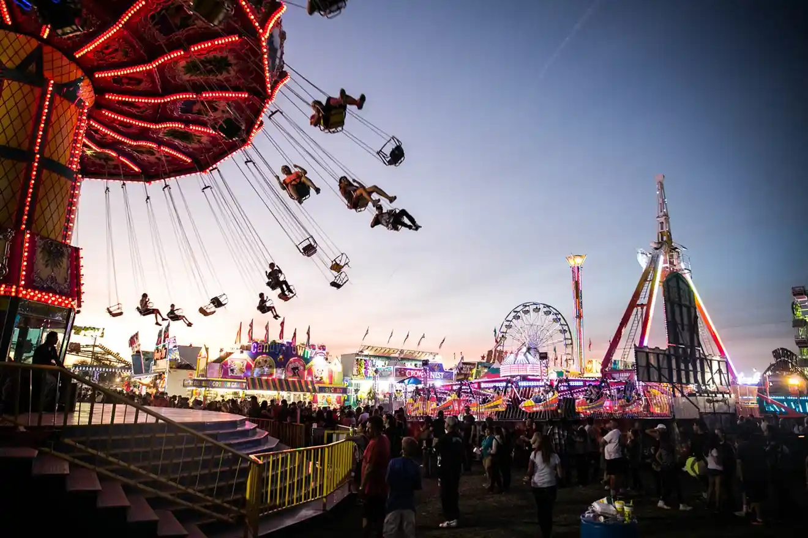
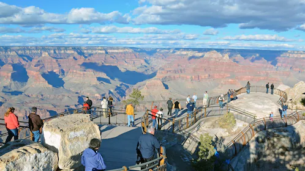
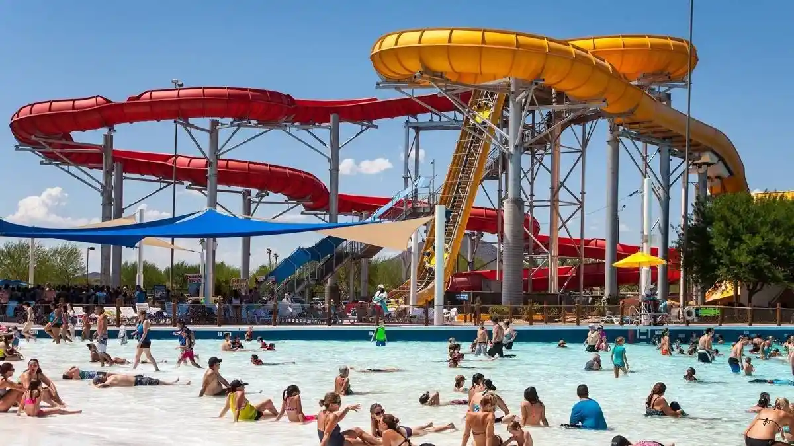

Discover Arizona
Last Visited
Demographic Data
-
Ethnicity/Race
- White: 60%
- Hispanic/Latino: 30%
- Black/African American: 5%
- Asian: 3%
- Native American: 2%
-
Age Distribution
- 0-17 years: 25%
- 18-34 years: 35%
- 35-54 years: 25%
- 55+ years: 15%
-
Household Income
- Under $25,000: 20%
- $25,000 - $50,000: 30%
- $50,001 - $75,000: 25%
- $75,001 - $100,000: 15%
- Over $100,000: 10%
-
Education Level
- High School Graduate or Less: 25%
- Some College/Associate Degree: 35%
- Bachelor's Degree: 25%
- Graduate/Professional Degree: 15%
-
Employment Status
- Employed: 60%
- Unemployed: 5%
- Not in Labor Force (e.g., retirees, students): 35%
Events
Phoenix Food Festival - April 20-22, 2024
Desert Bloom Music Festival - May 15-17, 2024
Phoenix Comic-Con - June 28 - July 1, 2024
Attractions
Sonoran Desert Botanical Garden
Phoenix Skywalk Observatory
Arizona Science Center



